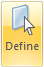

Create a study using a simplified model
You can create a study using the simplified form of a part or sheet metal model, and you can create a study of an assembly model that uses one or more simplified parts.
Create a study using a simplified part
-
In the part model, select Tools tab→Model group→Simplify.
-
(Simplify the part model) Use any of the commands available on the ribbon in the simplify mode to remove complex geometry from the model. For example, you can use the Delete commands on the Home tab→Modify group to delete faces, regions, and holes.
To learn more, see the help topic, Simplifying parts, in the Solid Edge Help.
-
On PathFinder, double-click the Simplify node to activate it.
-
On the ribbon, select Simulation tab→Study group→New Study
 .
. -
In the Create Study dialog box, select the study type and the mesh type, and then click OK to create the study.
The study name is added to the Simplify node in the Simulation pane, with the simplified part defined as the study geometry.

Use a simplified part in an assembly study
You can substitute one or more previously simplified parts for designed parts in a study.
-
In the assembly model, on Assembly PathFinder, right-click a part and choose Use Simplified Part. Do this for each of the designed parts that you want to substitute the simplified form.
The graphics window updates to show the assembly model with the simplified form of the part.
-
On the ribbon, select Simulation tab→Study group→New Study
. -
In the Create Study dialog box, select the study type and the mesh type, and then click OK to create the study.
The study name is added to the top-level Simulation node in the Simulation pane.
-
Choose Simulation tab→Geometry group→Define

. -
Select the simplified geometry to include in the study.
-
You can select entire bodies (occurrences), and you can select individual mid-surfaces, faces, edges, or vertices from a simplified body.
-
If you need to activate a part, click the part in the graphics window to activate it automatically, or select the Home tab→Select group→Activate command
 .
.
-
How do I
Verify simulation material propertiesCreate a study
Define a coupled study for thermal stress analysis
Assign units in studies
Define and review a transient heat study
Define a harmonic frequency response study
Learn more
Creating and using studiesUsing materials in studies
Modifying studies
Structural studies
Thermal studies
Using steady state heat transfer studies
Coupled studies
Harmonic response studies
Create and solve a study using GD optimized model
Create and solve a study using an STL model
Defining thermal studies
Look up more details
Create Study (or Modify Study) dialog boxTransient Heat Options dialog box
Options: Harmonic Frequency Analysis dialog box